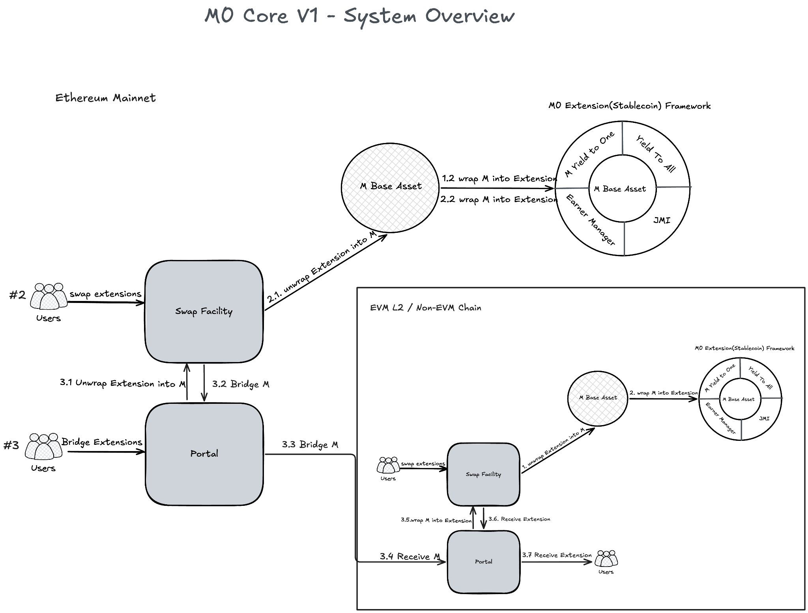
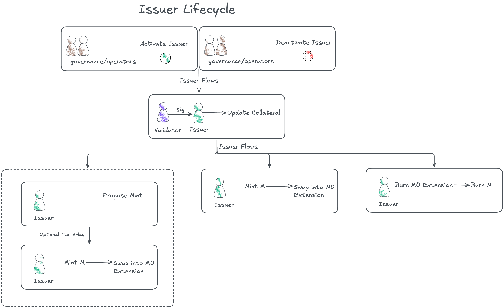
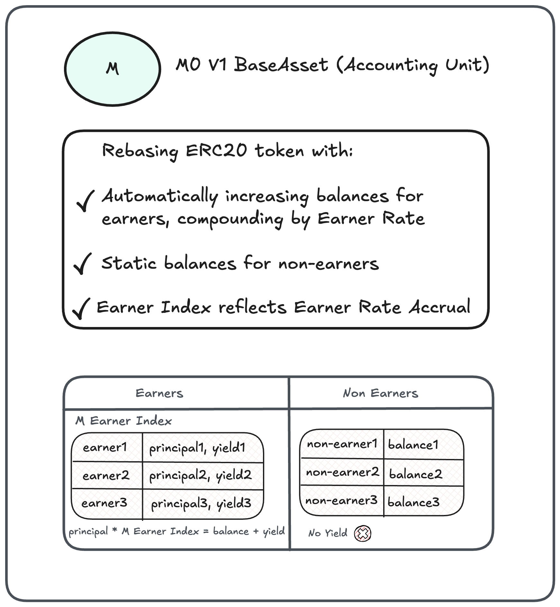
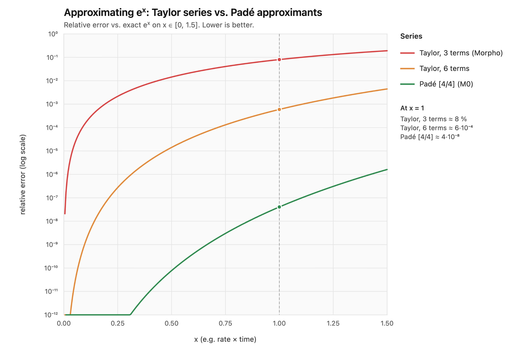
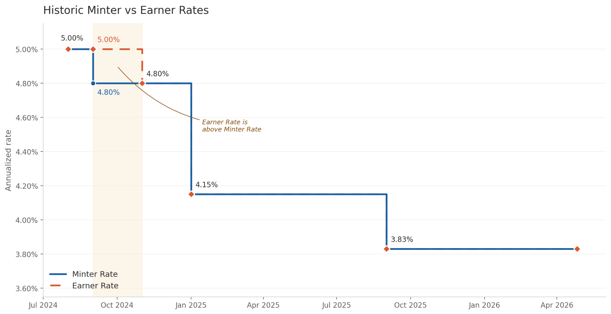
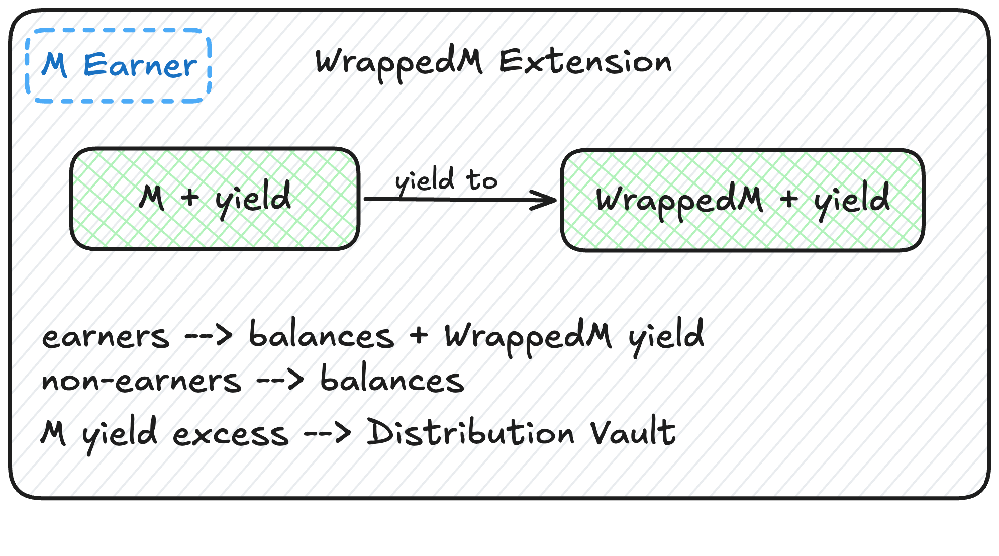
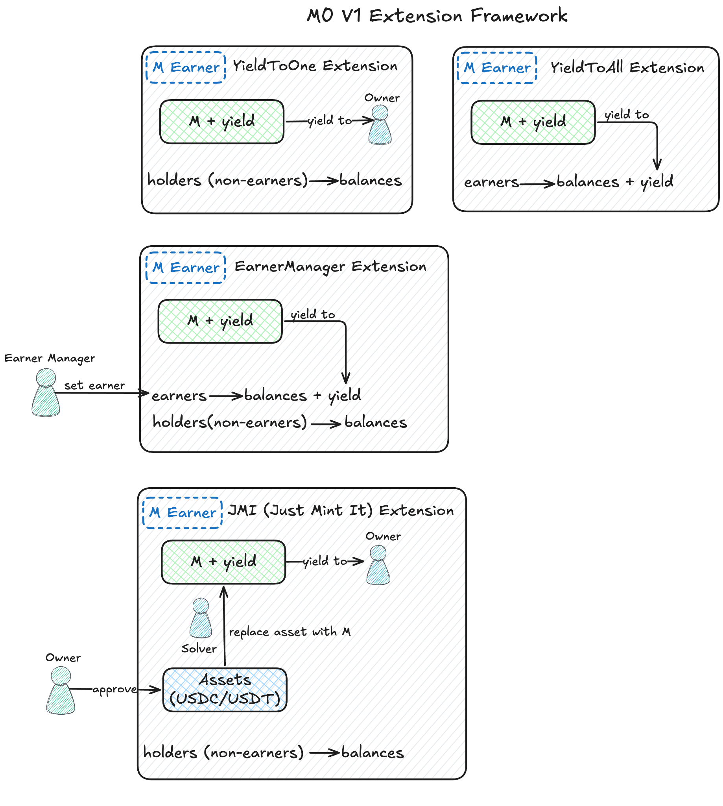
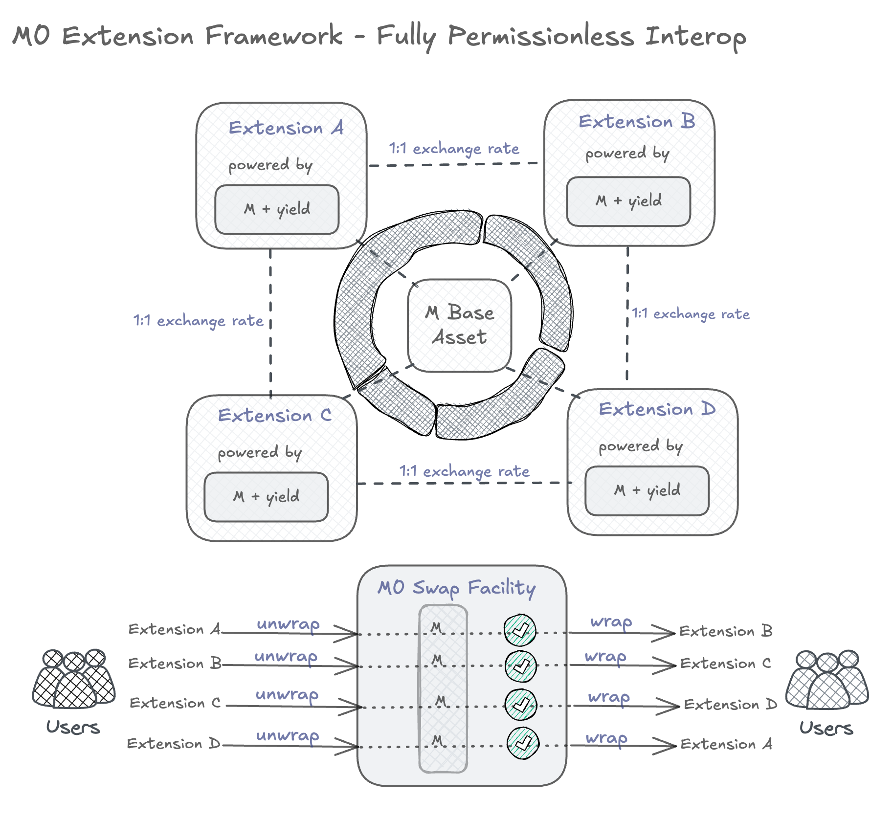
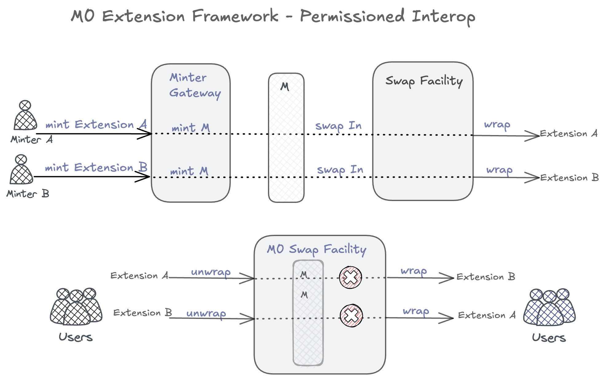
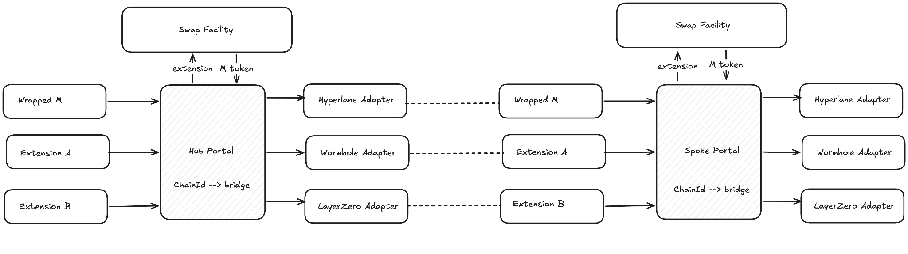

Overview
The core M0 protocol, along with the TTG (Two-Token Governance) framework that initially governed it, launched two years ago on the Ethereum mainnet. Since then, M0 has processed over $1.1B in mints and $950M in burns, expanded to Solana and more than 15 EVM chains, and established itself as the first white-labeled stablecoin platform — with the M0 Extension Framework serving as the foundation for partner-issued stablecoins (see the M0 Dashboard). In doing so, it has pressured incumbents like Bridge and Paxos to rethink parts of their own issuance and liquidity stacks, and contributed meaningful improvements to yield-tracking and interoperability standards across stablecoin DeFi.
Most recently, M0 has been paired with a new liquidity offering that enables intent-based limit orders for stablecoin issuance and redemption, as well as instantaneous mints through the JMI (Just Mint It) extension.
With new iterations on the horizon, it’s worth going back to basics: how and why things were built the way they were.
1.1 Issuance 101: the Minter Gateway
M0 was built from the start to be a unified, credibly neutral monetary network: one generic protocol/coordination layer that brings together different actors, namely Issuers, Validators, and Earners, and delivers open programmable stablecoins and transparency issuance and liquidity flows to end users.
The core M0 system comprises a few major components: the Minter Gateway, the M base asset, the M0 stablecoin extension framework, the M0 Swap Facility, and M0 Bridging Portals.

The M0 Minter Gateway is where approved minters, including MXON, MoonPay, 1Money, and Bridge, begin their issuance journey. The process starts with the minting of M, the base asset and unit of account of the M0 V1 ecosystem. M is then wrapped into issuer-specific stablecoins: mUSD (MetaMask) for Bridge, ctUSD (Citrea), an Exodus for MoonPay, Saturn, USDKy(Kast) for MXON, and many, many others. This process keeps collateral and asset risks isolated per issuer, alleviating regulatory concerns while maintaining unified issuance standards and collateral transparency across all participants.
1.2 Issuer’s process flows
All Issuers follow the same process:
1. Approval and activation within the Minter Gateway. The Minter Gateway is the only entity in the system that can create the M base asset on the Ethereum mainnet. On other EVM L2s and Solana, M is additionally permitted to be minted by M0 Bridging Portals.
2. Provision of up-to-date collateral attestations. Collateral must be validated by an approved set of validators, such as Chronicle. M0 launched with off-chain-first collateral, specifically T-Bills held in remote SPVs, and has since added support for on-chain collateral such as Superstate USTB and BlackRock BUIDL. The collateral state is kept current through periodic attestations submitted to the protocol. The updateCollateral method accepts validator signatures in either ECDSA or EIP-1271 format, supporting both EOA and smart contract validators that verify tokenized collateral fully on-chain.
3. Minting up to the Mint Ratio of collateral value. Once collateral is attested, a minter can mint M up to a set ratio of that collateral value. Like common LTV (Loan to Value) in DeFi lending, this enforces a hard solvency floor to prevent system undercollateralization:
Collateral Value × Mint Ratio ≥ Owed M (Minted M + Interest/Fee)4. Fee accrual on minted M. Minting M incurs an interest/fee that accrues continuously on the full Issuer’s outstanding balance. The Minter Gateway tracks this fee using the standard DeFi principal-and-index method:
Minter Principal += Minted Amount / Minter Index(t1)The index accumulates the minter rate over time:
Minter Index(t2) = Minter Index(t1) × e^(Minter Rate × Δt), Δt = t2 - t1The accrued fee at any point is:
Accrued Fee = Minter Principal × (Minter Index(t2) − Minter Index(t1))
Minter Owed M = Minter Principal × Minter Index(now)The index itself is stored on-chain whenever an action that could change the rate is executed.
Total outstanding issuer obligations are tracked via the Owed M variable (the issuer’s full debt to the protocol), which includes principal plus accrued fees, and must be cleared before either off-chain or on-chain collateral is released.
Note: M is a purely accounting asset. In practice, minting M is paired with an immediate swap into an M0 Extension tokens (stablecoins).
5. Ongoing collateral maintenance and penalties. After minting, issuers must keep their collateral attestations up to date, ensuring that collateral value continues to cover the growing Owed M. The collateral itself accrues yield, which is intended to offset the Minter Rate paid to the M0 protocol for the right to mint stablecoins. Missing an update or falling short on its value triggers a penalty, which is added to the minter’s outstanding principal and begins accruing the Minter Rate immediately:
Minter Principal += Penalty Amount / Minter Index6. Redeeming and burning M. Burning M reduces a minter’s Owed M balance and signals to the protocol and its coordinating actors that the corresponding off-chain or on-chain collateral may be released:
Minter Principal -= Redemption Amount / Minter Index
1.3 M as base asset and unit of account
The Minter Gateway’s output is the M base token. M is an intermediary token and unit of account, immediately wrapped into a supporting set of stablecoins via the M0 Swap Facility.
M is a rebasing token: its total supply and holder balances grow over time without requiring external transactions. Unlike simple rebasing tokens, however, M has a dual nature. Only approved earners accrue yield and see their balances grow; non-earners’ balances remain static. All earners accrue the same Earner Rate, and currently, the majority of M earners are M0 extensions. This design choice laid the groundwork for the first white-label stablecoin issuance platform, launched in early 2025.

Just as the Minter Gateway maintains an index that tracks Owed M accrual on issuers’ debt, the M token maintains an M Index that tracks yield accrual for earners via the Earner Rate. The accounting logic mirrors that of issuer debt, using the same M0 common libraries and index accrual mechanics:
Earner Principal += Transfer M Amount / M index(t1)
Accrued Yield(t1, t2) = Earner Principal × (Earner Index(t2) − Earner Index(t1))
Index(t2) = Index(t1) × e^(EarnerRate × Δt), Δt = t2 - t1Solidity math: Padé approximation and continuous compounding
For yield and debt tracking, M0 builds on ideas from major DeFi protocols such as MakerDAO and Compound, while taking a distinct approach to how the interest index is computed.
M0 uses continuous compounding rather than simple (linear) interest accrual via the index. Simple interest is the more straightforward of the two: Index(t2) = Index(t1) × (1 + Rate × Δt), easy to implement, audit, and understand, but it does not continuously accrue interest, and the result depends on user activity with the protocol. Continuous compounding approach using Index(t2) = Index(t1) × exp(Rate × Δt), is predictable and time-parameterized: the mathematical accrual between two timestamps does not depend on how often or when the index is updated, so the same formula can be applied consistently across multiple chains — provided the same logic, libraries, and rounding assumptions are used.
Different DeFi protocols approach this problem in different ways. MakerDAO’s rates module uses per-second discrete compounding via rpow, i.e. (1 + per-second rate) ^ seconds, which closely approximates continuous compounding at fine enough granularity. Compound v2 and v3 use simple interest between state updates (per-block in v2, per-second in v3), with compounding occurring implicitly when the accumulated interest is folded into principal on the next update. Morpho Blue uses true continuous compounding with the first three non-zero terms of its Taylor expansion. Solmate’s expWad takes a more involved route: range reduction by factors of ln(2), followed by a rational (numerator/denominator) polynomial approximation fit.
Since Solidity has no native support for Euler’s number, e^x must be approximated. M0 implements a Padé approximant of the exponential — a rational function of the form P(x)/Q(x) — which achieves the same asymptotic accuracy as a Taylor series of significantly higher degree, at lower computational cost. Per M0’s published research, this is the first implementation of a Padé approximation for continuous compounding in Solidity. The M0 Pade implementation has been audited, formally verified, and stress-tested in production for the last 2 years for over $2B in minting and redemption volume.

A note on index accrual storage and timing. One rule that still confuses even experienced DeFi builders is when to write the index to contract storage. The key principle: always accrue and store the index before any action that could trigger a rate change. This ensures the index reflects accumulation under the previous rate before the new rate is calculated and applied. Additionally, even if the rate doesn’t change, builders should also avoid letting timestamp deltas grow too large, since a large Δt can cause overflows and amplify rounding errors in the exponential approximation. A sound practice is to periodically trigger an index update on user interactions, even when the accrual rate has not changed.
Never overprint: two interest-bearing printing presses and the rate model that holds them in equilibrium
Risk-free yield must originate somewhere. The U.S. government remains the sole entity still positioned to contest that premise, but that debate sits well above this blog’s pay grade. Within M0, stablecoins are backed by a mix of off-chain and on-chain collateral (T-Bills, tokenized funds) that carries a native risk-free yield. Because this yield is off-chain by nature, it sets the ceiling on what an Issuer can charge for minting M while still leaving the Minter sufficient margin to remain economically solvent. On the other side of the ledger, Earners M0’s stablecoin extensions built atop M automatically accrue the Earner Rate.
When the Earner Rate is below the Minter Rate
In this case, the two sides of the ledger reconcile simply—the Earners’ streaming yield is paid out of the Issuer’s continuously accruing debt—and overprinting is practically impossible. The protocol can charge Minters at the Minter Rate and distribute yield to Earners at the Earner Rate in parallel, provided Minter solvency is monitored through regular attestations and purpose-built, bankruptcy-remote legal structures. What remains is to calculate the excess cash flow generated by charging Minters more than is paid out to Earners, and to distribute that surplus accordingly (see section below).
When the Earner Rate exceeds the Minter Rate
In M0’s early days, when not all of the M supply and its extension wrapper tokens were actively earning, the Earner Rate was set above the Minter Rate. The cautious reader might ask: Is that even safe?
It can be, provided the math holds up. When total Issuer debt (Owed M) exceeds the earning supply, active Earners can be paid a higher rate—effectively subsidized by the non-earning portion of the supply, and supplemented by the fees Issuers pay continuously on all minted M. The safety condition is derived from the continuous compounding formula for index rate accrual:
Total Owed M × (e^(Minter Rate × dt) − 1) ≥ Total Earning M Supply × (e^(Safe Earner Rate × dt) − 1)Solving for the Safe Earner Rate:
Safe Earner Rate ≤ ln(1 + Total Owed M × (e^(Minter Rate × dt) − 1) / Total Earning M Supply) / dtThis logic is built into the Earner Rate model, which can be queried for the safe Earner Rate at any point in time, given the parameters in use.
As an added precaution, a 98–99% safety multiplier is applied to absorb rounding errors, calculation imprecision, and the inherent novelty of code and models that—while thoroughly tested, simulated, and formally verified—were still relatively new at launch.
Extra Safe Rate = Extra Safety Multiplier * Safe Earner RateTo prevent the Earner Rate from drifting to extreme or unrealistic values when no Earners are present in the system, it is capped at a governance-set ceiling.
Capped Extra Safe Rate = Max(Governance Set Earner rate, Extra Safety Rate)Capturing excess by charging Issuers on the full M supply
While the protocol guarantees that M is never overprinted and that yield is always delivered to Earners, there are a few situations in which Minters pay in more than is distributed out to Earners:
- The Minter Rate is higher than the Earner Rate.
- Not all of the M supply is earning. Some portion is non-earning, yet Issuers are always charged on the total value of Owed M (effectively the M supply, for simplicity). This holds even when the Minter and Earner Rates are at parity.
- Issuers are penalized for missed collateral updates or undercollateralization. Penalty sizes are configurable and are added to Owed M.
Thanks to M’s rebasing nature, yield accrues directly into the total supply and into individual balances. The excess calculation is remarkably simple:
Cash Flows Excess = Owed M − M Total SupplyThe natural moment to distribute this excess is when the Minter Index is updated inside the Minter Gateway. At that point, the excess is calculated and minted to the M0 Distribution Vault, where it becomes claimable by governance token holders.

M0 V1 Core Protocol Parameters
All of the logic described above, except for the Minter and Earner Rate models themselves, is built into an immutable protocol designed to be highly generic and flexible. Its governance parameters allow operators to tune the system to specific needs without touching the core flows:
- Enable or disable strict collateral validation, and adjust the number of required Validator signatures.
- Turn penalties on or off for undercollateralization or missed collateral update deadlines.
- Allow any address to earn yield by default, given that M0 extensions are the primary intended Earners.
- Split the mint process into a two-step, time-delayed action. When the delay is set to zero, a proposed mint and its execution collapse into a single instantaneous step.
- Set Minter and Earner Rates independently, build arbitrarily complex rate calculation logic, and couple or decouple the two rates as needed. Disable charging the Minter Rate to Minters, or streaming the Earner Rate to Earners.
| Parameter | Type | Description |
|---|---|---|
| Allowlists | ||
| Earners | List | Allowlist of addresses approved to earn yield on held M. |
| Minters | List | Allowlist of addresses approved to request and execute mints. |
| Validators | List | Allowlist of addresses authorized to sign collateral updates, cancel mints, and freeze Minters. |
| Rate models | ||
| Earner Rate Model | Model | Contract address of the rate model used to compute the interest rate earned by Earners on their M balances. |
| Minter Rate Model | Model | Contract address of the rate model used to compute interest accrued by Minters on their outstanding debt. |
| Rates | ||
| Penalty Rate | bps | Rate charged to a minter for missing a required collateral update or for undercollateralization. |
| Max Earner Rate | bps | The governance-set ceiling on the Earner Rate, expressed in basis points. It caps the rate streamed to Earners when the model would otherwise produce extreme values, typically when few or no Earners are present. |
| Minter Rate | bps | The rate at which Issuers are continuously charged on Owed M. |
| Issuing | ||
| Mint Delay | Time | Mandatory wait period after a mint is requested before it can be executed. |
| Mint TTL | Time | Window after the mint delay during which a pending mint request remains valid. |
| Minter Freeze Time | Time | Duration for which a minter is frozen and unable to act after a validator triggers a freeze. |
| Mint Ratio | bps | The maximum ratio of M a minter may create against their attested collateral value. |
| Collateral validation | ||
| Update Collateral Threshold | Count | Minimum number of validator signatures required for a collateral update to be accepted. |
| Update Collateral Interval | Time | Maximum time between consecutive collateral update submissions before penalties apply. |
| Extra parameters | ||
| Earners List Ignored | Flag | Boolean toggle that, when enabled, bypasses the earners allowlist and lets any address earn by default. |
DeFi compatibility and WrappedM, the first-ever M0 extension
Shortly after the release of the core protocol and governance system, the M0 team began building the first upgradeable, non-rebasing, DeFi-compatible wrapper of the M token, a project that would eventually give rise to the broader M0 extension framework. The problem to solve had multiple dimensions: how to preserve M’s continuous yield-streaming model without its rebasing mechanics, and how to allow certain earners, such as liquidity pools, to not only accrue yield but also forward it to another address for secondary distribution.
At the time, wrappers for rebasing tokens did not really fit the bill for stablecoins. All of them relied on the assumption that the wrapper token appreciates in value over time, which inevitably breaks the 1:1 exchange rate between the original and wrapped tokens. That was not a trade-off M0 was willing to make.
Working from first principles, the team arrived at a novel wrapper design with a dual accounting model. This design later became the foundation of the M0 extension framework and enabled seamless, exchange-rate-free interoperability between M0-powered stablecoins/extensions. Readers who followed the minter debt and earner yield accounting sections will recognize the mechanics: alongside standard balances, designated earners track principals derived from the shared M index.
As long as the WrappedM extension contract is listed as an earner on the M contract, all M held within it accrues yield, which can then be distributed to designated earners within the WrappedM contract. For simplicity, Wrapped M was sharing the same earners list as M.
At deposit time t1, an earner’s principal is recorded as:
WrappedM Earner Principal = Wrapped M Amount / M Earner Index(t1)At a later time, t2, the balance plus unclaimed accrued yield for WrappedM Earner will be:
WrappedM Earner Balance + Yield = WrappedM Earner Principal × M Earner Index(t2)Claiming yield always brings the actual balance up to WrappedM Earner Principal × M Earner Index(now) and unclaimed yield to 0.
Unlike transfers in many other systems, however, these do not require a prior yield claim. Since the M index accrues continuously, the transferable principal for any given amount can be derived from that amount and the current index at the time of transfer, with any unclaimed yield still reflected in the sender’s remaining principal.

On claim, accrued yield can optionally be forwarded to a pre-configured claim recipient address that differs from the account itself. This matters most for earners like DeFi protocols and liquidity pools, which continuously accrue yield on their holdings but lack a reliable mechanism to handle that accrual themselves. As one specific example, the USDC/wM Uniswap V3 pool is registered as a WrappedM earner, with its claim recipient set to a different address, which handles downstream distribution.
As mentioned earlier, WrappedM and any M0 extension must be added to the earner list to accrue yield on the entire M balance locked within. That yield can then be distributed to the extension’s application builder or to its holders. The main invariant governing this system is:
M Balance Of (WrappedM contract) + M Yield ≥ WrappedM Total Supply + Wrapped M YieldBecause all M held inside WrappedM earns yield, while not all of the WrappedM supply is necessarily earning at any given time, excess yield can accumulate. That excess is routed to the owner contract or the Distribution Vault, as configured.
| M | WrappedM | |
|---|---|---|
| Rebasing | Yes | No |
| Yield claiming | Implicit — automatic accrual, which makes the token rebasing | Explicit claims with optional forwarding to a designated recipient |
| Accounting model | Principal and index for earners; balances for non-earners | Principal, index, and balances for earners; balances for non-earners |
| Index | M index | M index |
| Yield forwarding | No | Yes |
| Upgradeability | No | Yes |
| Wrapper of another token | No | Yes — wraps M Base Asset |
Necessity, once again, proved to be the mother of invention, and in this case, it produced a smarter stablecoin wrapper and a new model for stablecoin interoperability.
The M0 Extension Framework: Yield To One, Yield To All, Earner Manager, and JMI
The next step was to scale the model and explore richer features that could be built into stablecoin wrappers: custom compliance controls, accounts pausing and freezing, and more sophisticated approaches to yield streaming and splitting.
Compliance and observability features quickly converged on a common, generic set: the ability to pause, freeze, and unfreeze accounts, and to execute force transfers for legally seized funds. Yield streaming, however, proved more varied, and extensions began to diverge into distinct models.

Four distinct extension types:
1. Yield To One. All yield accrued on the M base asset is reflected in the extension’s supply and forwarded to a single predetermined address, typically an extension partner. This model gained particular traction following the GENIUS Act in July 2025 and the regulatory uncertainty it introduced around yield distribution to end holders.
2. Yield To All. The inverse of Yield To One: all holders accrue yield passively on their holdings. An optional fee-rate split allows stablecoin holders to receive a slightly lower rate than the underlying M Earner Rate, with the remainder going to the extension partner for operational purposes anf .
3. Earner Manager. A designated address is given granular control over yield: it can whitelist specific earners, configure individual yield splits, and adjust parameters over time. This model is designed for extension partners who need precise, programmable control over how yield flows to a defined set of participants.
4. Just Mint It (JMI). The latest addition to the framework, JMI combines M0’s liquidity and issuance capabilities to ease the onboarding friction that comes with a growing partner base. It allows users to mint an M0 extension 1:1 against a pre-approved stablecoin such as USDC or USDT, up to a configured asset cap.
Behind the scenes, a dedicated solver swaps the deposited USDC/USDT for the M base asset, settling the M0-issued extension on the user’s behalf. JMI sits naturally on top of the Yield-To-One model: while USDC, USDT, or other approved stablecoins are temporarily held within the contract awaiting settlement, the extension partner absorbs the small yield gap on that non-M balance. In exchange, end users get a dramatically simpler minting experience, with no exposure to the underlying issuance delays.
Interoperability and the M0 Swap Facility
As established first with WrappedM and later with other custom stablecoins, all assets in the M0 ecosystem share a common denominator: the M base asset sitting within the wrapper contract, accruing yield on its entire held supply. That shared foundation leads to a natural conclusion: the majority of these stablecoins are inherently interoperable, with only two steps separating any two of them:
Stable One → Unwrap To → M Base Asset → Wrap Into → Stable TwoThe role of permissioned unwrapper and wrapper was filled by a dedicated M0-controlled contract: the M0 Swap Facility, which enables seamless, price-discovery-free interoperability between permissionless extensions.

To accommodate the requirements of certain GENIUS Act-compliant stablecoins, a more permissioned interoperability variant was introduced. Under this model, only designated issuers can swap into a given extension, and the extension itself cannot be wrapped into or unwrapped from another extension directly through the M0 Swap Facility.

Crosschain bridging and interoperability
Early on, the M0 core infrastructure and extension protocol expanded to other EVM and non-EVM chains, including Solana. The Minter Gateway was deliberately kept on Ethereum mainnet only, for two reasons: to simplify the off-chain infrastructure requirements for Issuers, and to work within early protocol constraints that prevented the M token from being minted or burned by any address other than the Minter Gateway, and that required the Earner Rate to remain consistent across the system.
This approach has clear trade-offs. On the upside, it allows rapid expansion to EVM-compatible chains without additional issuance infrastructure. The downside is that it precludes native issuance on non-EVM chains like Solana, which could otherwise benefit from a fully sovereign minting stack.
The M0 team found a set of practical solutions to expand to other chains without native issuance:
- M Portals on the Ethereum mainnet hold the M balance that backs all supply across other chains.
- Each M Portal is a registered earner, meaning the yield it accrues backs yield distribution for all extensions on other chains.
- Yield accrual for EVM L2 extensions and Solana M is handled via index propagation, which tracks Earner Rate accrual originating from the Ethereum mainnet. Solana M is built as a Scaled UI Token 2022 extension, with the M index propagated from the Ethereum mainnet.
Cross-chain interoperability between extensions follows the same logic as same-chain interoperability. M0 Portals can be configured to allow bridging between exchangeable extensions across chains, controlled via route configuration within the M0 Portal.
As with the Swap Facility and the extension framework, M is the base asset of the bridging layer. Any stablecoin extension is unwrapped into M, bridged via M0 Portals, and wrapped back into the desired extension on the destination chain. To accomplish this, the Portal uses the same Swap Facility wrapping / unwrapping mechanism already familiar to the reader.
M0 Portal exposes a unified messaging interface that routes through Hyperlane, Wormhole, and LayerZero adapters under the hood. This multi-bridge design keeps the core infrastructure credibly neutral and resilient to failures in any single messaging provider.
